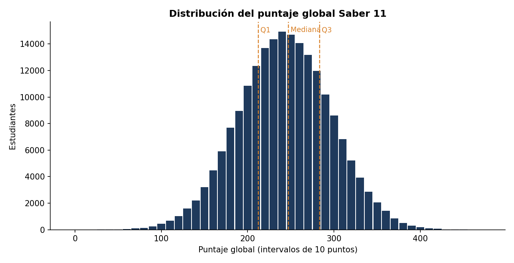
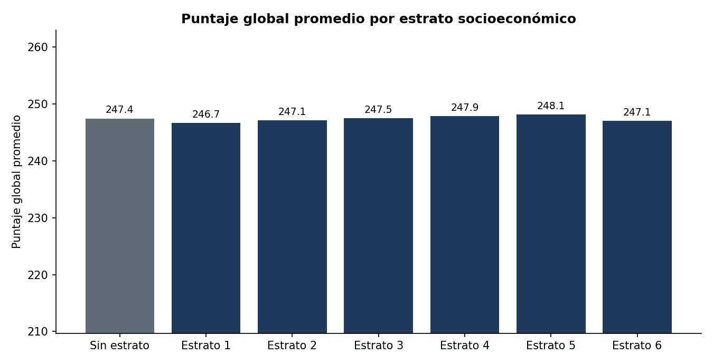
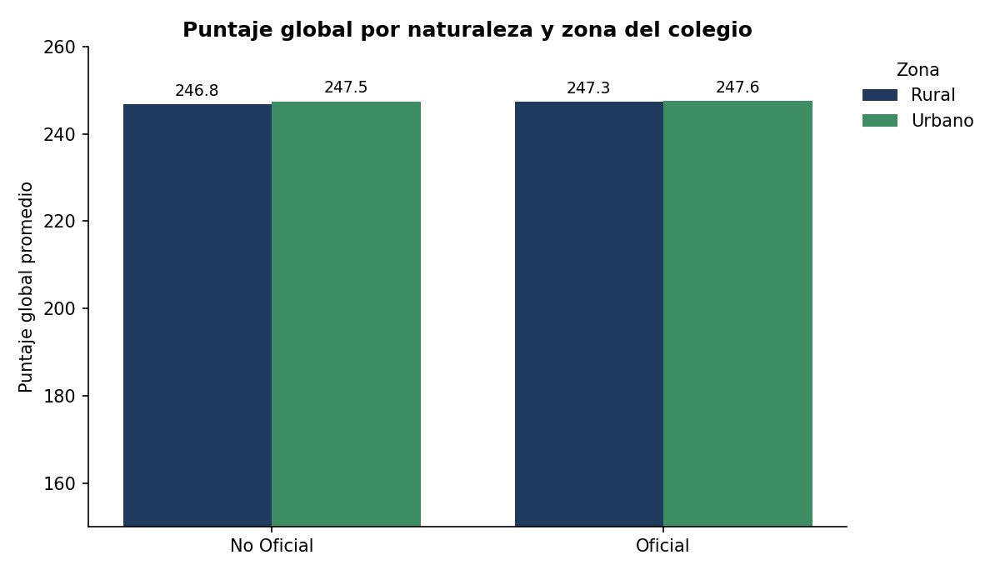
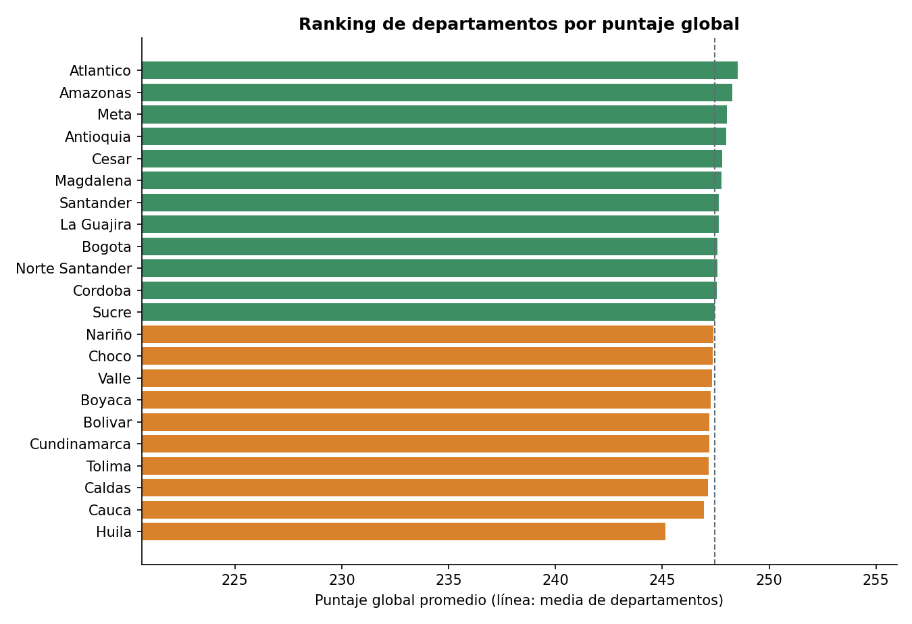
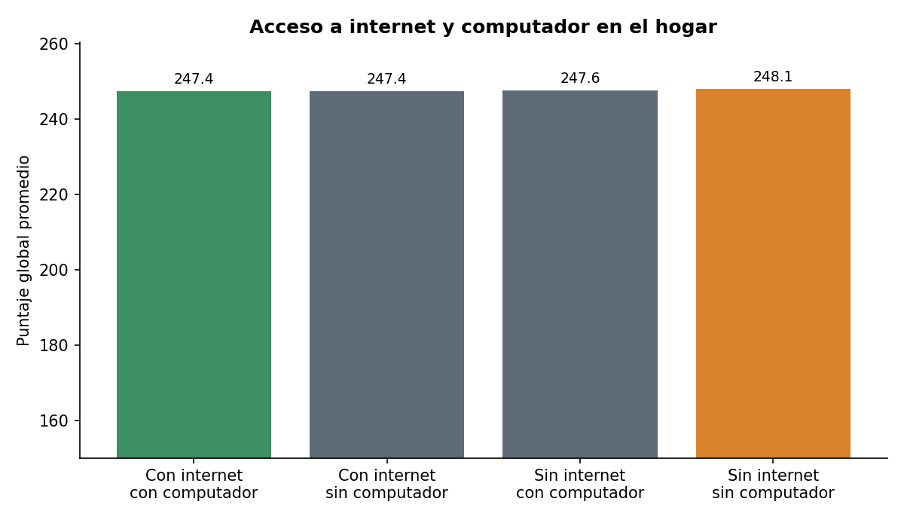
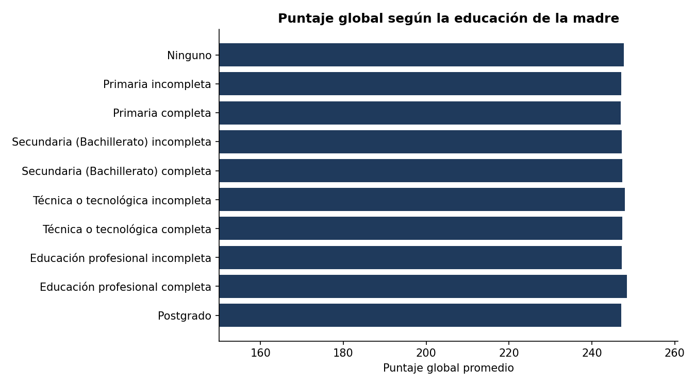
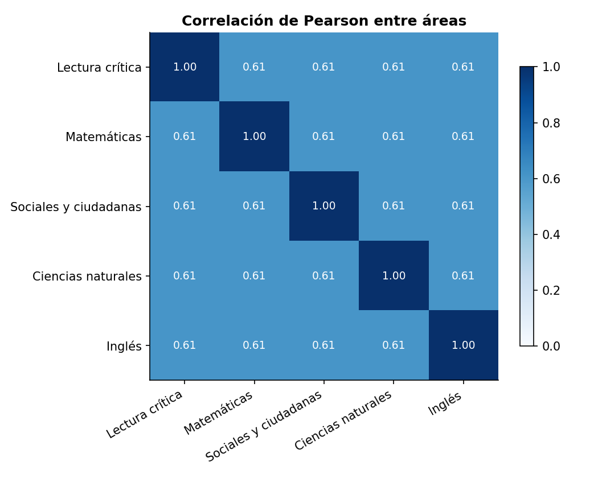
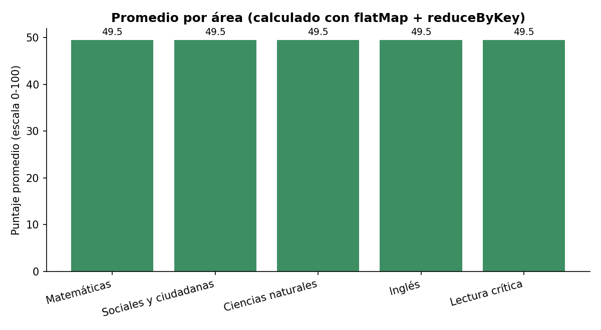

Fuente: ICFES, Resultados únicos Saber 11, datos.gov.co (kgxf-xxbe). Generado por saber11_batch.py.
| Estrato | Estudiantes | Promedio |
|---|---|---|
| Sin estrato | 24,821 | 247.45 |
| Estrato 1 | 25,016 | 246.68 |
| Estrato 2 | 25,044 | 247.13 |
| Estrato 3 | 25,110 | 247.52 |
| Estrato 4 | 25,213 | 247.88 |
| Estrato 5 | 25,010 | 248.12 |
| Estrato 6 | 24,818 | 247.05 |







